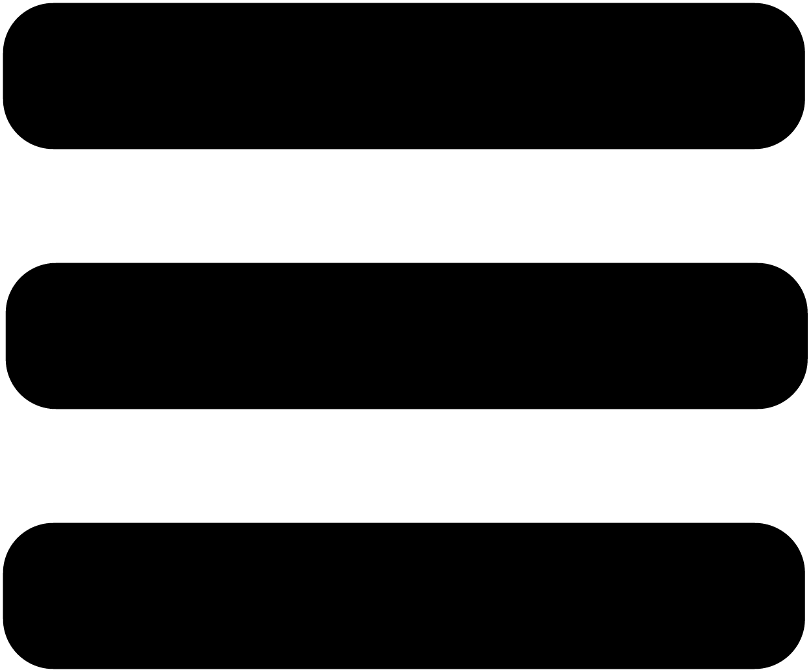
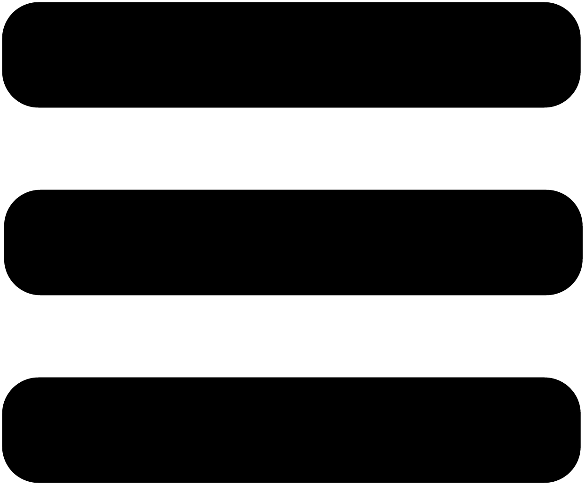
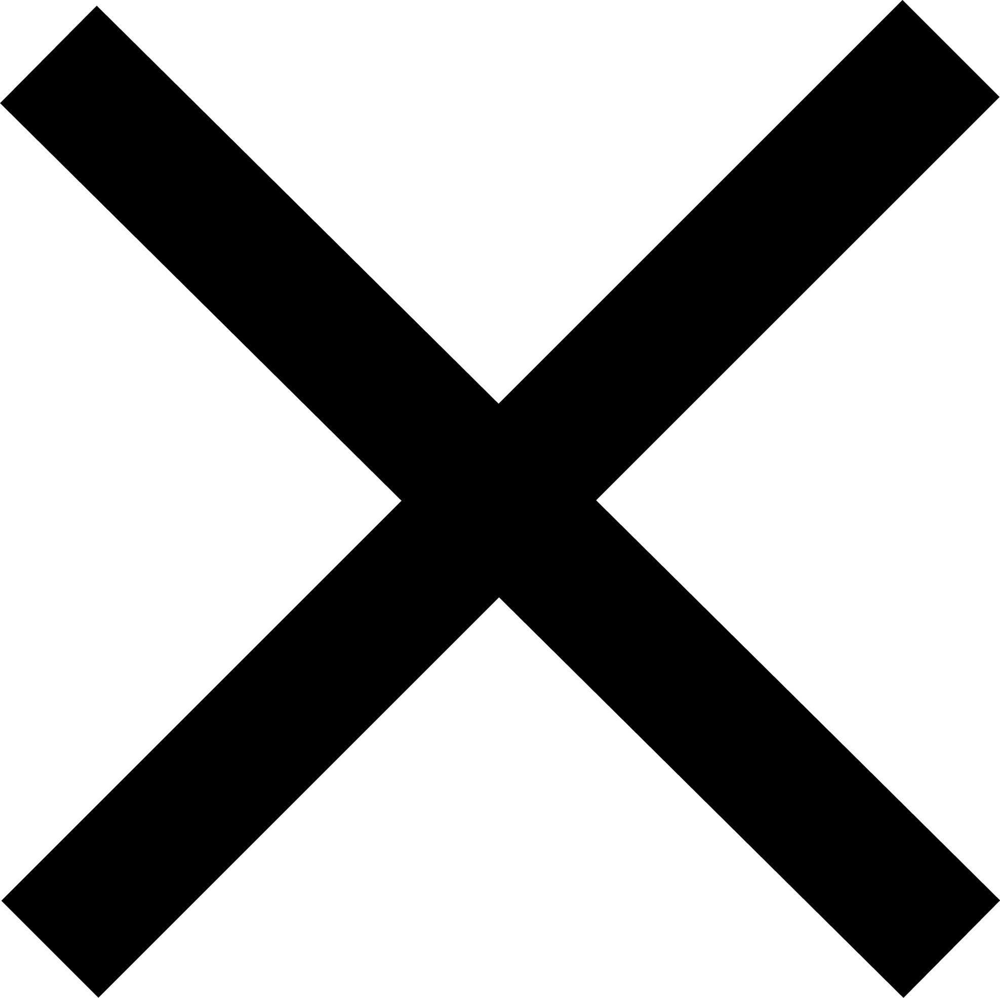
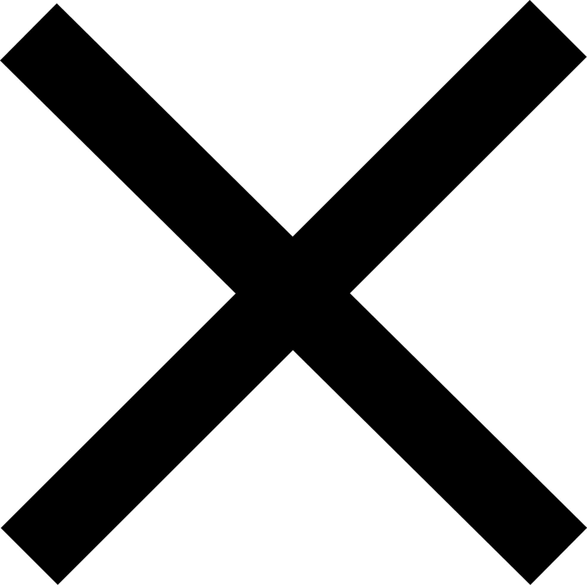

CerescoBank was established in 1911 as the Farmers and Merchants Bank of Ceresco and was situated on the corner of South 2nd Street and Elm. The bank has served the Ceresco Community since that time. The present bank building at 130 West Elm Street was completed in 1983, allowing the bank to have a drive-thru banking lane and an expanded modern customer service area. In 1990 the bank name was changed to CerescoBank to reflect its identity and close ties to the Ceresco Community.
CerescoBank is an independent, locally owned and operated financial institution offering complete banking services to Ceresco and the surrounding market area. Located in a growth triangle between Lincoln and Omaha urban areas, CerescoBank is committed to maintaining a strong presence in the agricultural and business community of Ceresco and being a leader in promoting the quality of life for our community while taking advantage of the growth potential due to Ceresco's geographic location. CerescoBank combines banking technology with hometown personal customer service to provide to each customer a friendly personal banking experience.
Our mission is to continue as a locally owned institution, maintaining a strong commitment to our customers, community and employees, while providing full banking services at a technological level determined by our markets' demand. Safety and stability will be the footings on which we will continue to build. Our customers will be provided with superior customer service, integrity and respect.


 
 
